EH
';" />
Profil Calon Guru

Ema Humaera, S.Pd
Calon Guru Profesional
"Pendidikan adalah kompas yang menuntun nalar, sekaligus layar yang menangkap angin harapan untuk membawa setiap anak bangsa menuju dermaga impian mereka."
"Jangan hanya memberi mereka ikan atau jala, ajarkan mereka cara membaca arah bintang agar tak tersesat di tengah luasnya samudera pengetahuan."
Tentang Saya
Perkenalkan, saya Ema Humaera, biasa dipanggil Ema. Saya lahir di Bulukumba pada 2 Agustus 2000 dan merupakan anak pertama dari dua bersaudara. Saya merupakan alumni Program Studi Pendidikan Teknik Informatika dan Komputer, Universitas Negeri Makassar. Saat ini, saya sedang melanjutkan Pendidikan Profesi Guru (PPG) di Universitas Negeri Yogyakarta pada Program Studi Informatika.
Saya memiliki minat yang tinggi dalam bidang pendidikan, khususnya dalam merancang dan melaksanakan pembelajaran yang interaktif, bermakna, serta relevan dengan kebutuhan murid. Bagi saya, pendidikan tidak hanya berfokus pada transfer pengetahuan, tetapi juga menjadi proses penting dalam membentuk karakter dan mengembangkan potensi murid secara optimal dan berkelanjutan. Di luar kegiatan akademik, saya memiliki hobi traveling, memasak, dan membaca, yang turut memperkaya wawasan serta pengalaman saya dalam kehidupan sehari-hari.
Informasi Dasar
Nama Lengkap
Ema Humaera, S.Pd
NIM & Kelas
25105260447 - Informatika B
TTL
Bulukumba, 02 Agustus 2000
Riwayat Pendidikan
SMA Negeri 7 Bulukumba
IPA (2015-2018)
Univ. Negeri Makassar
S1 PTIK (2018-2022)
Univ. Negeri Yogyakarta
PPG Informatika (2026)
Pengalaman Mengajar
Saya memiliki pengalaman sebagai guru honorer di SMP Negeri 8 Bulukumba, yang menjadi salah satu langkah awal dalam perjalanan saya di dunia pendidikan. Pengalaman ini memberikan kesempatan berharga bagi saya untuk terlibat langsung dalam proses pembelajaran, berinteraksi dengan murid, serta memahami dinamika kelas secara nyata. Melalui pengalaman sebagai guru honorer ini, saya semakin yakin untuk menekuni profesi guru secara profesional. Hal ini menjadi motivasi bagi saya untuk terus mengembangkan kompetensi diri melalui Program Pendidikan Profesi Guru (PPG), agar dapat memberikan kontribusi yang lebih baik dalam dunia pendidikan.
Dokumentasi
Artefak dokumentasi selama mengikuti perkuliahan, PPL, dan penerapan Inovasi Pembelajaran.
Kegiatan Perkuliahan & Kebersamaan Kelas
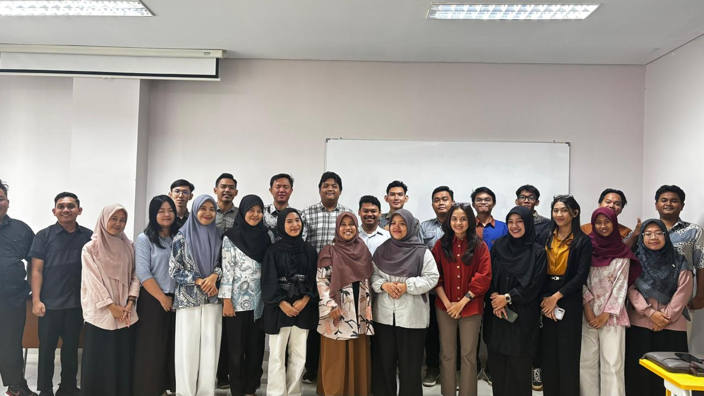
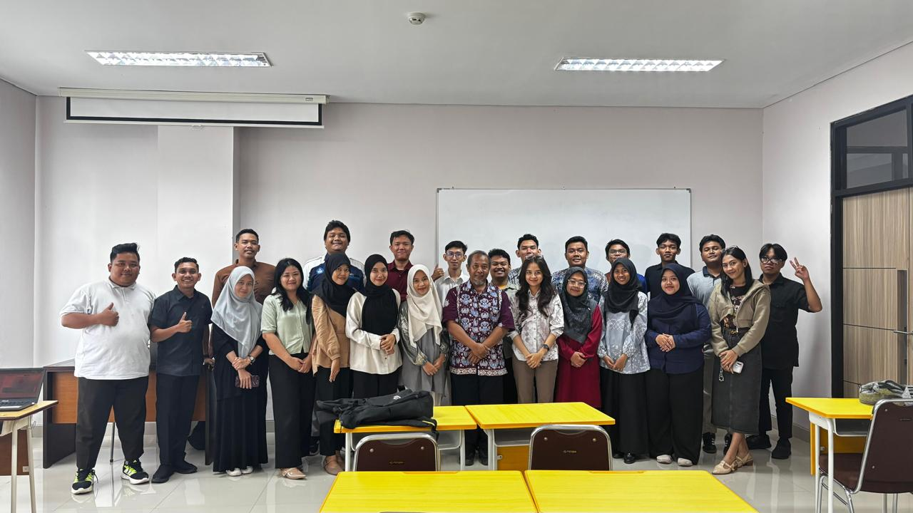
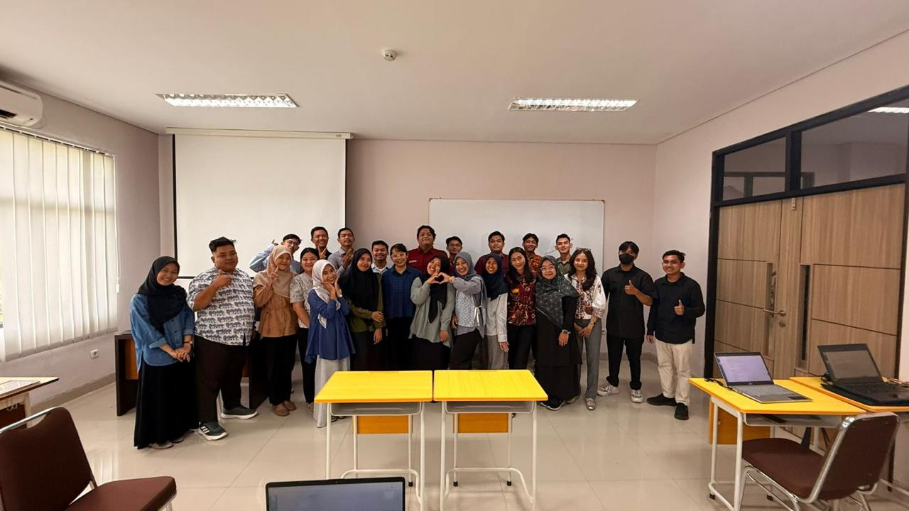
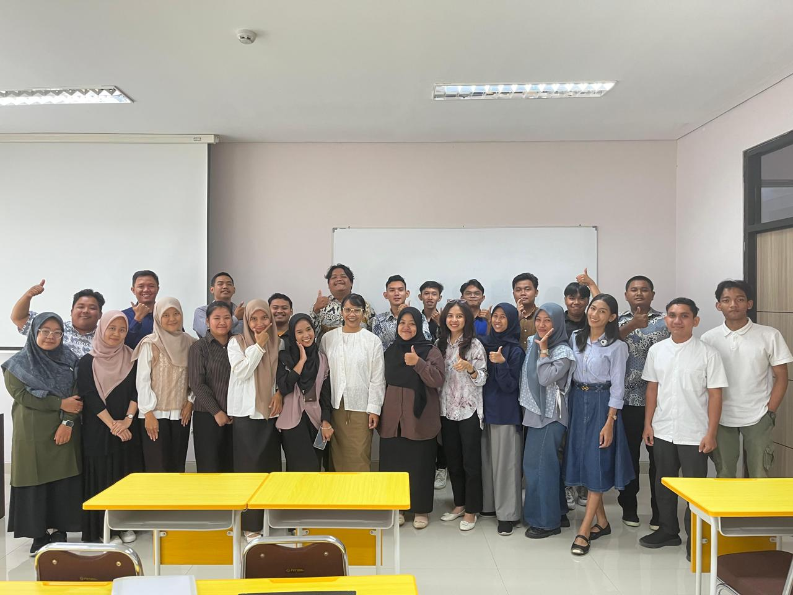
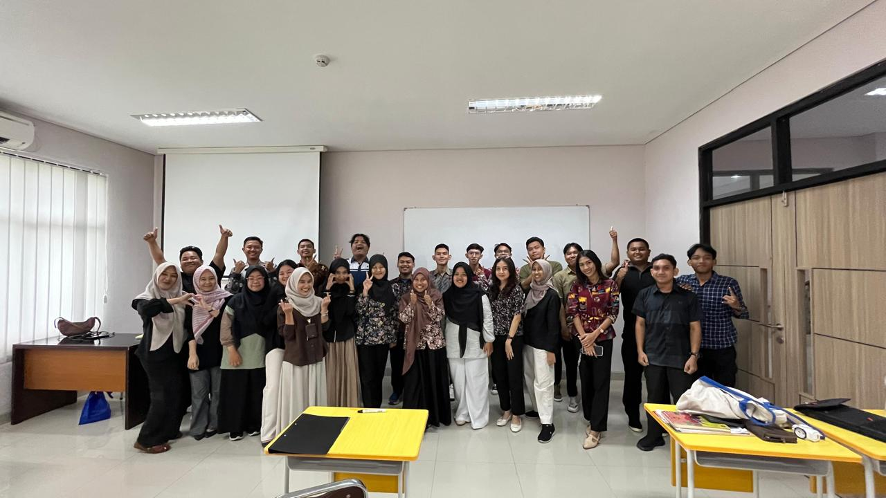
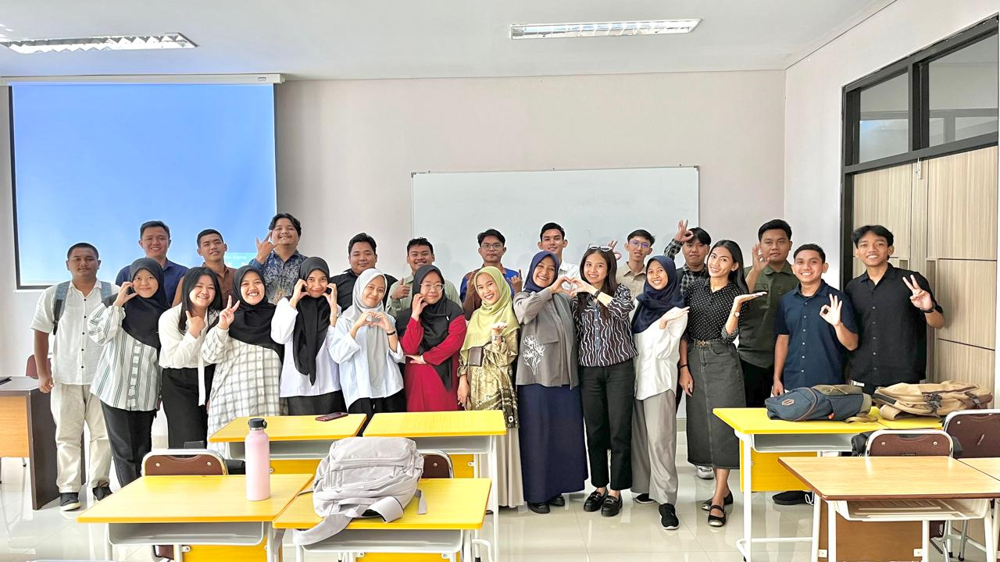
Penerapan Inovasi Pembelajaran di Kelas
.png)
.png)
.png)
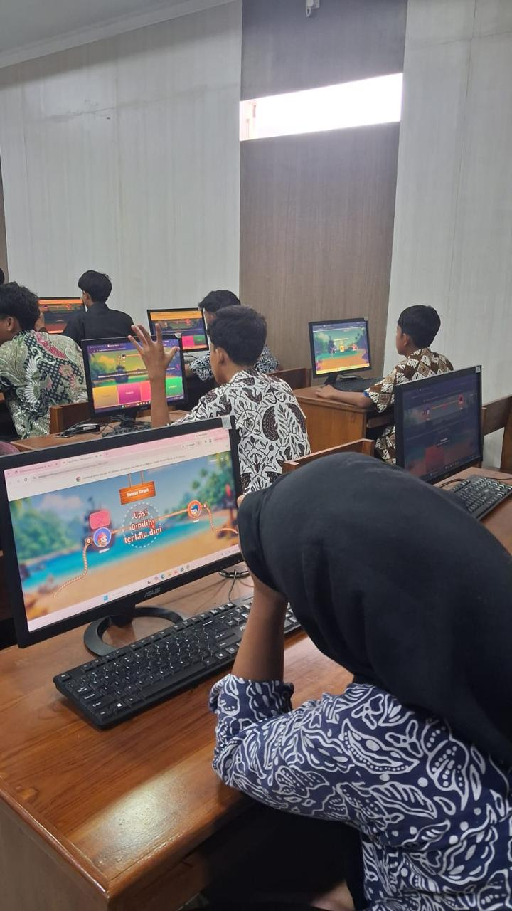
.jpeg)
.jpeg)
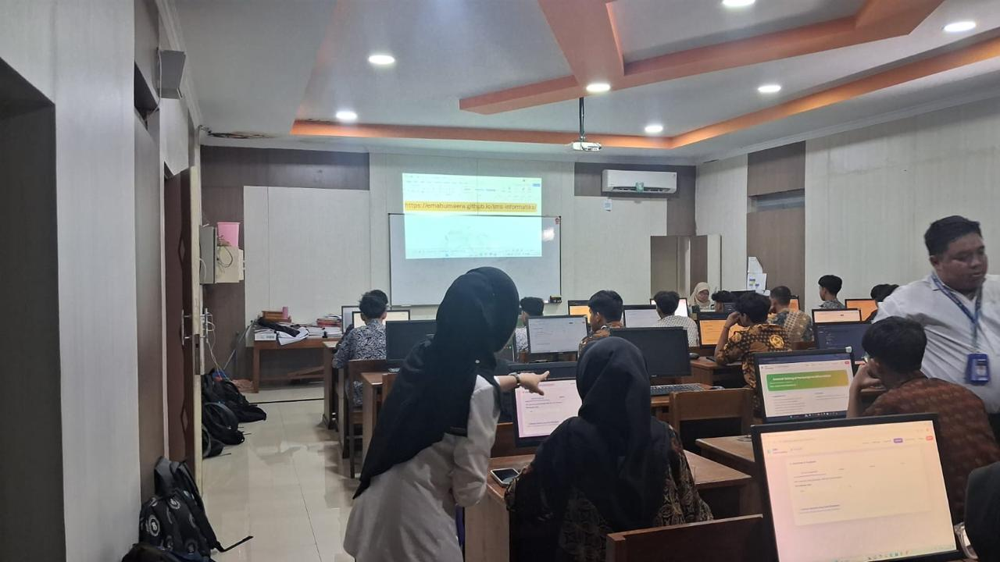
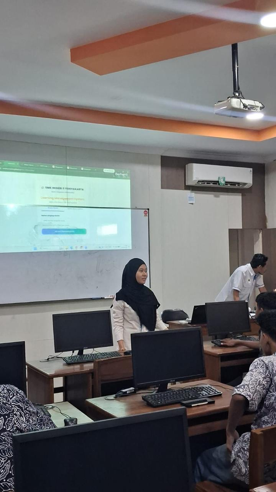

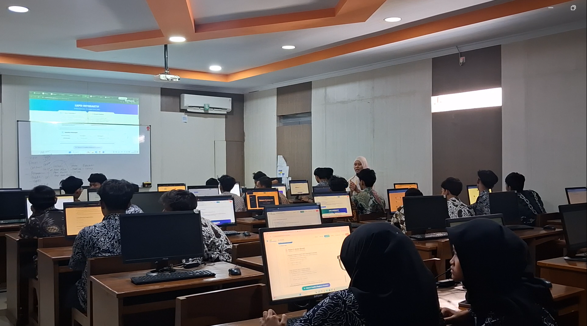


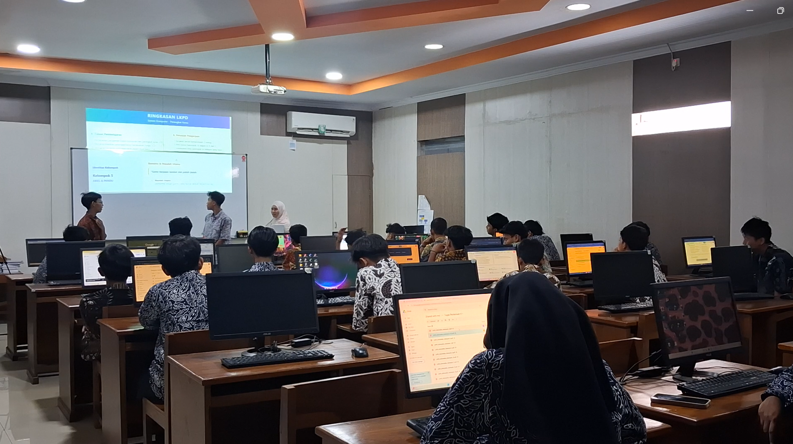